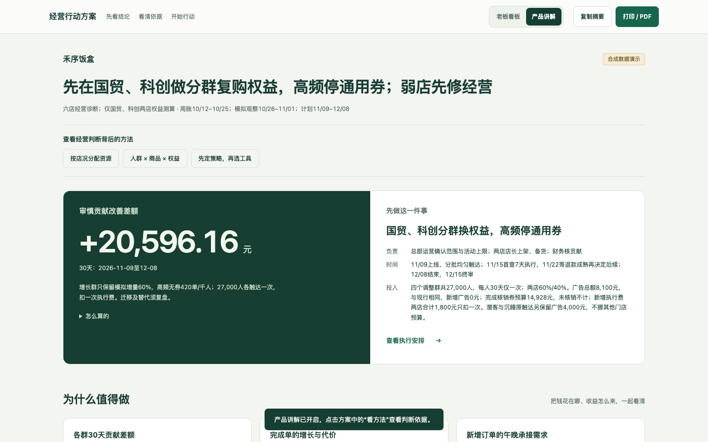

榕味小馆 · 30 店预算重配
连锁、有投放 · 周报 + 预算约束 + 分组试行
九成预算放在回收较弱的工具上，怎样调整更划算？
审慎测算：每月 +18,000 元
总推广预算不增，先试 7 天调拨。扣除 60% 变动成本和执行费，两轮验证后再决定整月持续。
查看连锁经营看板把店铺资料和经营周报变成一份能讨论、能执行的建议，再用商家回传判断下一步。供顾问、KA 和服务团队接单时使用。
禾序饭盒 · 六店诊断，两店定向试行
从门店经营账和分群观察出发，决定给谁什么商品与权益。打开「产品讲解」，点击判断旁的圈点，查看材料依据、经营方法和对应动作；切换人群，比较不同权益的选择。

独立合成案例；只在材料覆盖的两店测算人群权益，不将试行计划写成已实现效果。查看材料与运行记录
1.8.3 新安装包生成，可逐项查看判断与行动。
连锁、有投放 · 周报 + 预算约束 + 分组试行
九成预算放在回收较弱的工具上，怎样调整更划算？
审慎测算：每月 +18,000 元
总推广预算不增，先试 7 天调拨。扣除 60% 变动成本和执行费，两轮验证后再决定整月持续。
查看连锁经营看板单店、无投放 · 乱格式工作簿 + 老板成本口径
省下的包装钱，是否被冷餐退款吃掉了？
审慎测算：每月 +1,650 元
先恢复保温包装试行 7 天；多付的包材和复核费用已计入，按成熟退款回传决定是否继续。
查看单店经营看板演示案例使用合成材料，展示结果以对应报告的口径与范围为准。
经营判断由人负责，Skill 帮助理解材料、核算金额和整理交付。
从店铺页、商品和评价中找到具体问题，先给商家一件能做的小事，再说明什么资料会改变判断。
读懂现有周报与老板口径，比较可选动作，核算费用和审慎情景，把责任人、试行范围与止损条件写清楚。
交付一份老板经营看板
先确认实际做了什么、投入多少，再比较同口径结果。根据新证据决定保留、调整、撤回或扩大。
交付下一步决定与回传安排
接单时，先约定商家的目标和本次服务范围。初诊可单独交付；拿到内部材料后再形成方案，执行回传进入下一次复盘。
1.8.3 真实运行与产品交互，约 115 秒。
可以下载录屏，查看材料读取、实际计算与看板导出的完整操作。
下载 Skill，在 Codex 或 Claude Code 中交给 Agent。替换为自己的店铺资料与周报，按 README 从首次诊断开始。
Skill 1.8.3：连锁、单店从原件独立生成；保留同轮方法与计算记录。Claude Code 暂缓验收。